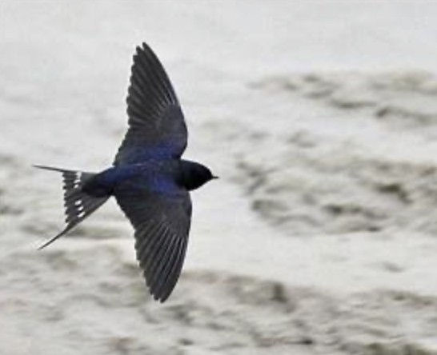

英国 · 保护雨燕计划
每年4月，从非洲启程的雨燕抵达英国，开始筑巢并繁育后代。由于老建筑翻新或重建、森林砍伐、食物来源减少、气候变化以及土壤和水资源污染等因素，过去20年间，雨燕在英国境内数量下降58%，已被列入英国最濒危鸟类红色名单。英国狩猎和野生动物保护基金会研究主任安德鲁·霍德莱斯认为，有效保护列入红色名单的鸟类，提高其繁育成功率至关重要。包括英国皇家鸟类保护协会在内的多家鸟类保护组织联合发起倡议，鼓励英国民众在住房和社区的建筑外墙为雨燕提供简易鸟巢，为其繁育后代提供便利。

伦敦雨燕保护组织（Swift
Conservation）计划每年安装20，000个由一种绿色轻质材料制成的、易于组装的巢箱。英国皇家鸟类保护协会在其网站提供了安装鸟巢的详细指南，帮助英国居民参与保护雨燕计划。相关组织还与英国地产商联合研发出一款有空腔的建筑砖块，可以安装在新建房屋合适位置，方便雨燕在里面筑巢。
此外，普通民众还可以通过动物保护组织开发的“雨燕绘图”手机程序，在春夏季将观察到的雨燕数量、行踪、鸟巢位置等信息上传，便于科学家对繁育期的雨燕有针对性地加强保护。2021年，“雨燕绘图”程序收到的观测记录量同比增加了67%。